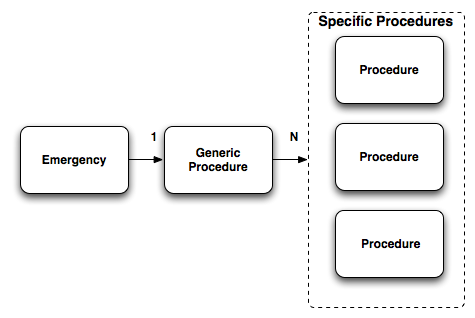
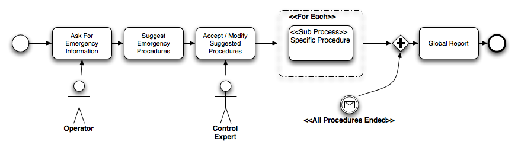
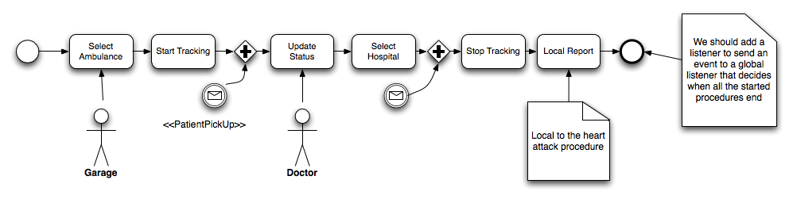
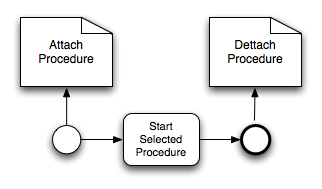
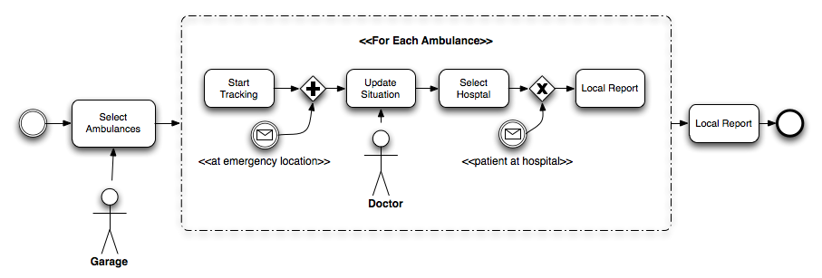
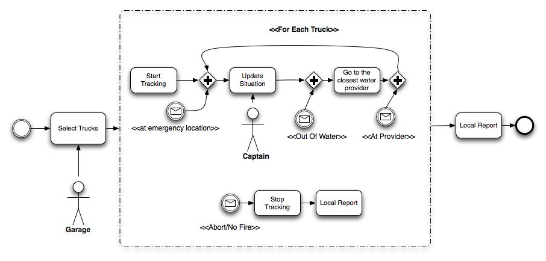
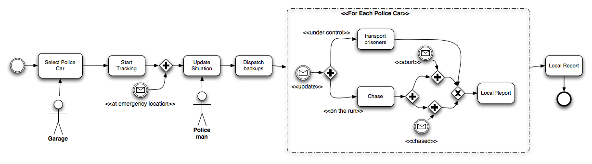

Emergency Services V3: Proposed features
This blog post is to share with the community the roadmap of the emergency service application for the third iteration.
This application was designed to show how to architect an application using Drools and jBPM5. The application demonstrate several features of each project module and we are trying to add and complete the application with more and more features through different iterations.
Proposed Features
This third iteration is focused on adding the following features into the application:
1) Improve the current architecture of the application making the standard procedures more generic and flexible.
2) Add backward chaining features
3) Add planner features
To be able to add all these features in the application we will be first focused in improving the business procedures always adding more features visible to business users. We are adopting this approach to highlight the way of solving problems and architecting applications using the power of the declarative approach proposed by these tools.
Spending time on the technical side of the application is not a priority at this point. We will be changing the design and the components during next iterations, but we encourage the community to helps us on very specific technical problems or giving feedback about the proposed design.
From the business use case side the following procedures and features will be added:
Generic Emergency Procedure
This procedure will be executed for each emergency call that is received at the central offices. For this reason, this procedure will be hosted and empowered by a different set of services to support and execute a generic set of tasks required to deal with every new emergency.
The big change compared with the old version is that now each emergency will have a one-to-one relationship with the information generated by all the internal procedures.
The generic procedure instance will be in charge of maintaining the relationship between all the specifc procedure instances required by the emergency.

- Procedures Relationships with Emergencies
Now each specific procedure will be in charge of notifying to the parent generic procedure.
This design change (in contrast with a completely decoupled procedures approach) will help us to keep track of the task that are being executed. Allowing us to have two levels of reports:
1) High Level Report: about the whole service (end-to-end) usually consumed at the end of all the activities
2) Local Report to each specific procedure (localized) usually online

- Generic Emergency Procedure
Default Heart Attack Procedure
This procedure covers a heart attack situation that involves an ambulance that needs to be sent to the emergency location. A hospital will be selected based on the situation and the location of the emergency and the ambulance driver will be notified about this selection. The patient vital signs will be monitored in real time to notify the central about the status of the patient.

- Default Heart Attack Procedure Single Patient
AD-HOC Procedure
As you may notice the generic emergency procedure allows the company to decide and select which procedures are appropriate for a specific situation in a quick and well defined manner. For doing this selection the contextual information and human interaction is used to quickly deal with the current emergency. But what happens if we want to start a procedure on an ongoing emergency? What happens if we receive information from an external source that affects the company behavior when all the procedures were already started? The company will need a way to Attach and Detach dynamically new procedures to emergencies based on the information that we are receiving from external sources. If we found one if this situations, we don’t want to trigger a complete new emergency and we will not have another phone call that triggers the generic emergency procedure. For this kind of situations we will have the following simple process that will allow us to attach a new procedure to an existing emergency.

- Ad-Hoc Procedure
Multi Injured People Emergency Procedure
Similar as the Default Heart Attack Situation we have defined a generic purpose procedure to deal with emergencies that require a set of ambulances to be dispatched to the emergency location.

- Multi Injured People Emergency
Start Tracking y Stop Tracking should attach and detach a vehicle to the tracking system.
Multi Fire Truck Emergency Procedure
For emergencies that involve fire we need to coordinate trucks from the firefighters department. The following procedure deals with selecting the number of trucks and monitoring each truck water supply during the emergency.
In this case instead of receiving the patient vital signs we will receive periodical updates about the truck water supply and the fire situation in order to decide if we need to dispatch more trucks or if the situation is under control.

- Fire Emergency Multi Truck
Using the ad-hoc procedure we can start as many of this procedures as we want for an emergency.
Generic Bank Robbery Procedure
This very different procedure will be used for bank robbery situations. In this procedure we need to coordinate police cars in order to deal with a bank robbery.

- Generic Bank Robbery
Some new components
We need to add to the application infrastructure new components to deal with very specific topics. Some of these modules are very basic but they will helps us to show a realistic application architecture allowing us to show how each of these specific topics can be abstracted from the application infrastructure.
The following list covers most of these new components:
- CRUD users / Groups
- Entities Administration
- Hospital Service
- Police Department Service
- Firefighter Service
- Entities Monitor Service
- Emergency Tracking/Context component
CRUD Users / Groups
Simple screens and back end service to abstract where the users that can interact with the application will be stored and retrieved.
Entities Administration
Entities can be any external source that bring services that can be coordinated by the emergency service company. Each entity can be defined as Input, Output or Input/Output entity.
This relationship will tell us if we can interact with the external entity or if we will just receive information updates from that entity.
INPUT/OUTPUT entity: Hospital, Police Department, FireFighters Department.
INPUT entity: traffic service, phone number recognition service.
Hospital Service
This service will be in charge of sending us periodical updates about their availability. We will have one instance of this service per hospital that the emergency service is coordinating. This service will also allow us to send request for new patients when we are dealing with an emergency with injured people.
Police Department Service
This entity will allows us to request for police cars to go to a specif location. This service will be also sending updates about the police cars availability that they have. This service will be used in conjunction with the tracking service to attach and detach monitored vehicles.
Firefighters Department Service
This entity will allows us to request for fire trucks to go to a specif location. This service will be also sending updates about the trucks availability that they have. This service will be used in conjunction with the tracking service to attach and detach monitored vehicles.
Entities Monitor Service
Real time monitor to analyze and receive the updates of all the external entities. This will be a Log like console with an alert box that shows us when specific situations are found.
Emergency Tracking/Context Component
This component will be in charge of allowing us to attach different activities and entities to a specific emergency. This tracking component will allows us to scope information for each specific emergency.
Some of the methods that this service will expose are:
ID newEmergency()
ID newProcedure(emergencyId)
void attachProcedure(emergencyId, procedureId)
void detachProcedure(procedureId)
ID newVehicle()
void attachVehicle(procedureId, vehicleId)
ID newServiceChannel(emergencyId)
This service should also bring a domain specific query interface that allows us to retrieve the information for each specific emergency and all the relationships with all the attached entities and services.Sum up
The new version that we are planning will allow us to build and show more complex scenarios. Exposing all the tools that we need to adapt the application to new use cases and support mixed scenarios where we cannot predefine all the actions that needs to be executed. The main purpose of this post is to show the ideas that we have in the top of our head and encourage the community to contribute adding ideas or things that you want to see in the app. Consider this post as a brainstorm about the things that we will be doing this next month. You can always track our advances and download the code here: https://github.com/Salaboy/emergency-service-drools-app
For more information about the application you can take a look here:
http://salaboy.wordpress.com/2011/05/28/emergency-services-v2-jbpm5-and-drools-blueprint/
Or follow us on twitter: @calcacuervo @ilesteban @salaboy

{kind=link}
{kind=link}
{kind=link}
{kind=link}
{kind=link}
{kind=link}
{kind=link}